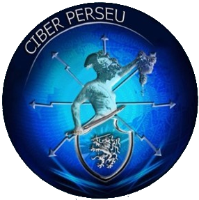
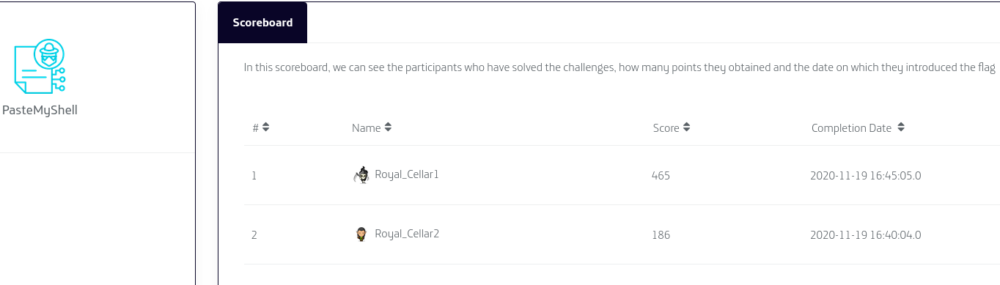
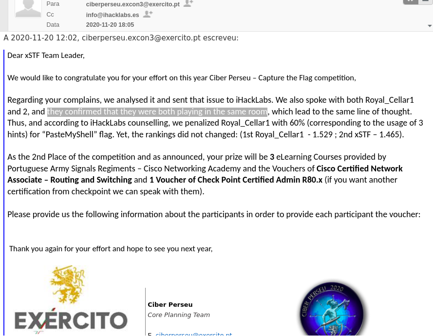
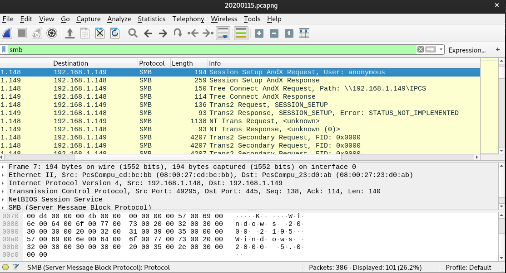
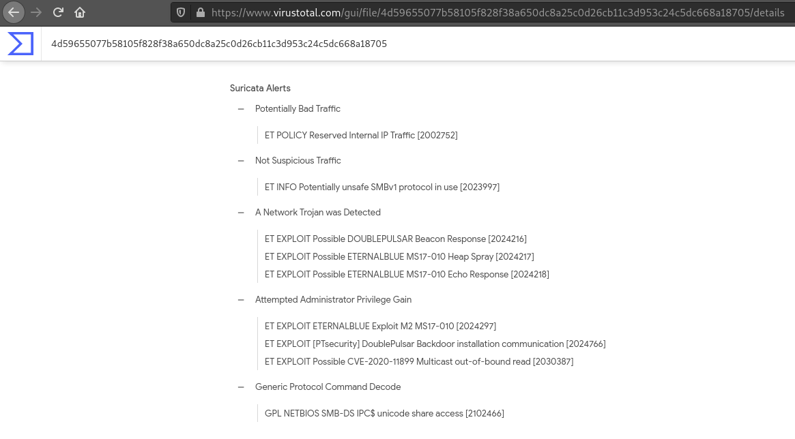
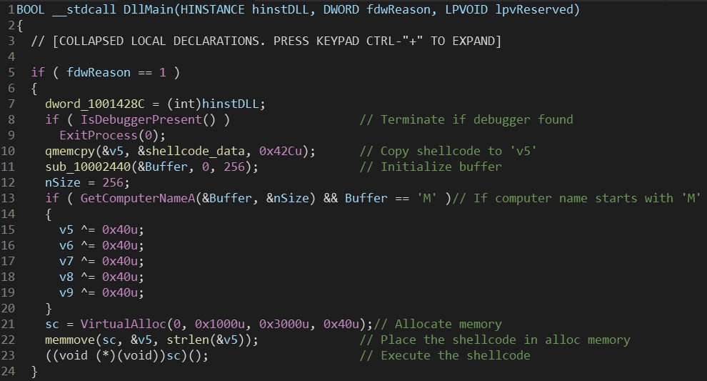
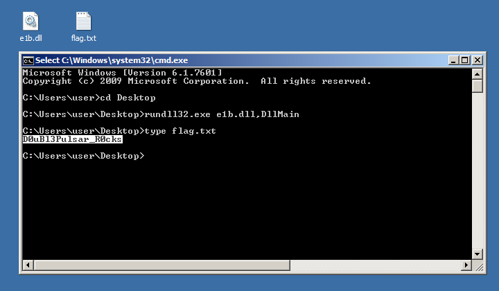

Ciber Perseu 2020 CTF - "PasteMyShell" Writeup - Forensics
04-12-2020

Image credits: Exercito.pt
Introduction
The Portuguese Army (Exército Português)
performs operational training on cyberdefense every year. This exercice is designated
as "Ciber Perseu" and the 9th edition was held in November 2020.
Besides
the CTF competition, there was also a "cyber range" infrastructure where the Army,
several institutions and companies tested their response capacity while being
attacked under a controlled adversarial simulation environment.
Our academic team xSTF was invited to participate in Ciber Perseu CTF to represent the University of Porto. We solved challenges of the following categories: reverse engineering, steganography & forensics and finished "2nd" 🏆.
Final decision about teams classification (and cheating teams)
The CTF competition infrastructure was provided by iHackLabs.
Teams were initally given credentials to login to the platform and (supposed to be)
limited to 4 elements.
Each challenge had a set of 3 hints that could be unlocked. However, by unlocking hints, the maximum score of the challenge would decrease if solved (-20%, -40% and -60% respectively for each unlocked hint). Also, taking too long to solve a challenge would result in score penalization.
In the last day of the Ciber Perseu 2020 CTF, the "PasteMyShell" challenge (difficulty: hard) was released and remained unsolved for almost the entire day, except when two teams submitted the same solution with a difference of 5 minutes.

These two cheating teams belong to "Romania Ministry of National Defence" (Ministerul Apararii Nationale) (source: Exército).
What we should consider:
- Both teams have similar names: "Royal_Cellar1" and "Royal_Cellar2"
- The score difference of submitted solutions:
- "Royal_Cellar2" submitted the solution at 16h40 and scored 186 points.
- "Royal_Cellar1" submitted the solution at 16h45 (5 minutes after) and scored 465 points.
Obviously, both teams collaborated to solve this challenge (and certainly the other challenges too)
by breaking the rules.
The inconsistency
of score also reveled that "Royal_Cellar2" unlocked ALL the hints for this challenge (-60% of total score)
and shared the hints with "Royal_Cellar1" (whose score wasn't affected because they re-used hints, hence,
the 465 points vs 186 points).
In resume, the secondary team "Royal_Cellar2" was used to unlock hints and provide them to the main account "Royal_Cellar1" in order to climb/smurf.
Our team immediately reported this to the CiberPerseu organization and iHackLabs but we just got answered way after the CTF ended.

We still don't understand why CiberPerseu organization did not disqualify both teams for playing unfair. They broke several rules, including:
- Team of 8 members (other teams were limited to max. 4)
- Sharing hints
- Helped each other (climbing/smurfing)
We also don't know if they cheated on other challenges too because the iHackLabs plaform hid the score table at the end of each day. Both CiberPerseu organization and iHackLabs refused to provide logs or relevant information to the rest of participants regarding this occurrence.
Our team respected the final decision, even though we don't consider it was the correct one (especially because there were prizes for Top3 winners). Not only us (xSTF) but also the rest of participant teams were in disadvantage against the two cheating teams.
We hope that next year Portuguese Army, CiberPerseu organization change their posture and start enforcing the rules for everybody during the CTF competition in order to achieve a better quality training and fair classifications.
In general, the CTF challenges were fine, but honestly (in my opinion) I was expecting much more considering it was the Army cyber defense exercise. I believe there's a lot to improve in the context of Portuguese national cyber defense.
The challenge
Our team solved this challenge during the CiberPerseu Closing Cerimony but could not submit the flag because the platform was already closed. We did not unlock hints or use secondary accounts.
We were given a
Opening it in Wireshark reveals a lot of SMB traffic. We immediately knew it was some kind
of file transfer.

We tried to extract objects from the pcap file without success. Uploading the file to VirusTotal (4d59655077b58105f828f38a650dc8a25c0d26cb11c3d953c24c5dc668a18705), the Snort & Suricata analysis identified possible EternalBlue/DoublePulsar exploitation.

After researching a bit, we found this interesting post:
"Network Forensics: Packet-level analysis of NSA EternalBlue exploit".
The pcap contents matched the request/response and the signature of successful payload installation
as seen in the previous article. At this point we knew the pcap was a capture of SMB EternalBlue exploitation.
However we had trouble recovering the payload and lost a lot of time trying to decrypt it (it was a guessy challenge because we only had the pcap without any executable binary in hands to examine).
We found out later that it was encrypted using a 4-byte XOR and could be decrypted
using a tool made by F-Secure Countercept:
doublepulsar-c2-traffic-decryptor.
After running the tool, we extracted a

The shellcode was encoded (probably with shikata_ga_nai encoder) and we could not decode it properly. Our last resort was to change computer name to start with 'M' and execute the DLL. This procedure was performed in a Windows 7 virtual machine snapshot.
To execute the DLL we ran the following command:
A PowerShell window popped up for half a second and then a text tile

References
- https://www.hackers-arise.com/post/2018/11/30/network-forensics-part-2-packet-level-analysis-of-the-eternalblue-exploit
- https://www.microsoft.com/security/blog/2017/06/30/exploring-the-crypt-analysis-of-the-wannacrypt-ransomware-smb-exploit-propagation/
- https://github.com/countercept/doublepulsar-c2-traffic-decryptor
- https://isc.sans.edu/forums/diary/Detecting+SMB+Covert+Channel+Double+Pulsar/22312/